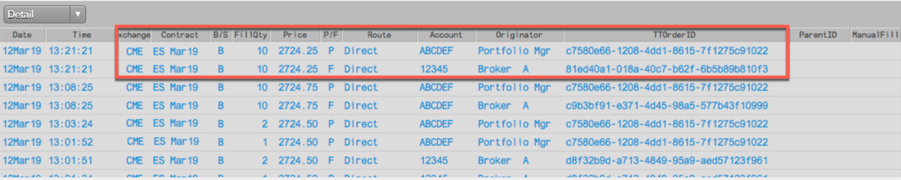
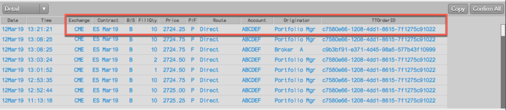
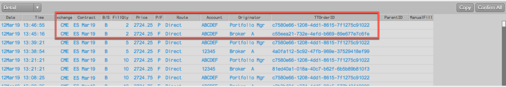
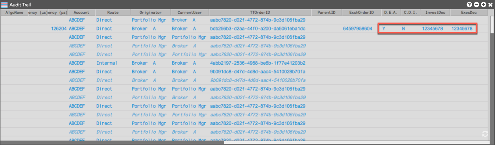

The Order Ticket, Order Book, Fills, and Orders and Fills widgets support the following care order user functionality:
Before you begin, ensure you are showing the following buttons and columns in the Order Book or Order Book pane of the Orders and Fills widget:
After claiming a care order in the Order Book, the owner can submit child orders related to the parent care order using the Order Ticket. The child orders can be sent to the exchange in the same account as the parent order, or sent in different accounts. The different accounts can be the owner's native accounts that are inaccessible to the originator, or can be child accounts that are part of the same parent-child account hierarchy accessible to the originator.
Child orders can be sent in multiple accounts to fill the same staged order. If you use the account default or order profiles functionality, those predefined rules will seed the execution accounts based on markets, product types, and specific products.
The care order owner and originator will both see the care order fills in their Fills widget or Fills pane in their Orders and Fills widget. The owner can fill the care order by submitting related child orders or assigning their own fills, including manual fills using their own account or the same account as the originator. Based on which account the owner uses, the originator may also see the owner's fills if they are associated with their care order.
If the owner fills all or part of the care order using a different account from the originator's account, the owner will see fills for both accounts. For example, the owner's account "12345" and the originator's account "ABCDEF"

Because the owner used their own account to fill all or part of the care order, the originator sees just the fills for their own account (e.g., ABCDEF).

When the owner fills all or part of the care order from the same account as the originator's account, the owner will see fills for both accounts. For example, account "ABCDEF" for the child order ID, and account "ABCDEF" for the care order ID.

Because the same account was used, the originator will also see both fills in their Fills pane.
When owners work a staged order at any point in time, they have access to a full Audit Trail of the order. The Audit Trail includes information about when the order arrived and was claimed, as well as when the order was filled, modified, and/or canceled and replaced, etc.
If the owner has MiFID II tags associated with their order profile when submitting child orders related to a parent care order, those tags appear on the order and are sent to the exchange and appear in the Audit Trail.
